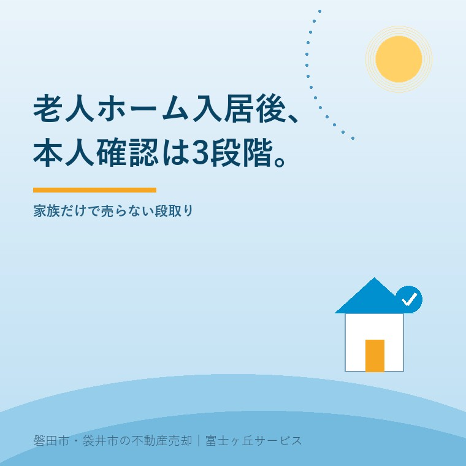

2026年9月3日｜カテゴリ：老人ホーム／本人確認／不動産売却

この記事の要点
Q. 老人ホームに入った親の実家を売りたいです。本人確認は何をしますか。
A. ①来ている人が本人か、②所有者または正当な代理人か、③価格と手取りを理解して売る意思があるか、の3段階で確認します。施設入居や診断名だけで可否は決まりません。本人と直接話せるうちに、名義と意思を分けて確かめます。
磐田市・袋井市・森町では、介護施設の運営から不動産事業を始めた富士ヶ丘サービスのような「介護×不動産」専門の会社に相談する選択肢があります。
施設に入った親の家を売るとき、ご家族は「権利証も実印も預かっている」と話します。ところが、不動産会社が確認する相手は、書類を持ってきた子どもだけではありません。売主になる親本人です。
厚生労働省によると、2026年9月は認知症月間です。9月21日は認知症の日で、全国約8,000の行事等が予定されています。件数は2026年8月21日現在の概数です。この数字の大きさより、本人抜きで家の話を決めないことを私は重く見ます。
老人ホーム入居後の不動産売却では、本人確認を「顔写真付き書類を見る作業」だけで終わらせず、人物、権限、売却意思の3段階に分けます。
| 段階 | 確認すること | 用意する材料 |
|---|---|---|
| 1 人物 | 氏名、住所、生年月日と、面前の人が一致するか | 運転免許証、マイナンバーカード等の本人確認書類 |
| 2 所有・代理権 | 登記名義人か。代理人なら何を任されているか | 登記事項証明書、委任状、後見登記事項証明書等 |
| 3 売却意思 | 物件、価格、諸費用、退去後の住まいを理解しているか | 査定書、費用表、売却後の手取り表 |
国土交通省の不動産業者向け資料では、宅地建物取引業者は売買契約前に、個人の氏名、住所、生年月日、取引目的、職業を確認すると説明しています。これは第1段階の公的な土台です。
第2、第3段階は別の確認です。本人確認書類が有効でも、家の登記名義が亡くなった配偶者のままなら、売主を確定できません。名義が親本人でも、家族へ鍵を渡した事実だけでは売却の代理権になりません。
親が老人ホームへ入居しても、子どもに実家売却の代理権が自動で移ることはありません。施設の身元引受人や緊急連絡先になったことも、不動産を売る権限とは別です。
家族だから売れる、は通りません。これはご家族を疑うためではなく、親の財産を守り、買主へ有効な所有権を移すための線です。権利証、印鑑登録証明書、通帳をまとめて預かっていても、本人の意思と権限の確認は残ります。
遠方の子どもが窓口になる場合は、東京に戻った相続人が磐田へ来ずに売る方法で、特別な委任とオンラインでの説明を整理しています。ただし、代理で連絡できる範囲と、契約・登記を代理できる範囲は同じとは限りません。
登記名義が親ではなく亡くなった方のままなら、本人確認より先に相続人を確定します。期限と必要書類は相続登記の期限と磐田・袋井の窓口で確認できます。
認知症という診断名だけで、不動産売却の可否が一律に決まるわけではありません。確認するのは、その売買の内容と結果を本人が理解し、自分の意思で判断できる状態かです。
法務省は、判断能力が不十分な方について、不動産などの財産管理や施設入所の契約を自分で行うことが難しい場合があると説明しています。法定後見には、本人の状態に応じて後見、保佐、補助があります。
法務省のQ&Aには、成年後見人が本人の自宅を売るため、家庭裁判所から居住用不動産の処分許可を受けた例もあります。後見人になれば何でも自由に売れる、という話ではありません。自宅に当たるか、代理権や同意権がどこまであるかで段取りは変わります。
施設入居後の元の実家を売るときの許可申立てと申立手数料800円は、成年後見人の実家売却で確認する家庭裁判所の許可と800円に、必要書類と査定の順番をまとめています。
親が認知症になった後の売却が止まる理由は、認知症で実家の売却が凍結する仕組みでも説明しています。診断前後のどちらでも、売却意思を家族が代わりに作ることはできません。
本人確認を3段階に分ける良い点は、施設にいる本人を置き去りにせず、家族が先に集める資料を具体化できることです。名義の問題と判断能力の問題も混同しにくくなります。
その上で、不動産会社側へ注文したい点があります。「認知症ですか」と一問だけ聞き、診断名で入口を閉じる案内は粗い。反対に、ご家族の説明だけで契約準備を進めるのも危うい。本人と直接話す時期、方法、同席者を査定段階で決めるべきです。
私はこう考えます。今すぐ売るかより、本人が決められるうちに何を確認するかの方が先です。今日、売却を決めなくてよい。登記名義と本人確認書類の住所を見比べ、本人へ「家を残したいか、売って施設費へ充てたいか」を家族の答えを挟まず聞く。それだけでも材料は増えます。
ここは私も迷います。施設費が毎月出ていれば、空き家の固定資産税と管理費を早く止めたい。一方、数字だけで急げば、本人が帰れると思っていた家を家族が先に処分することになります。これは体験ストックにある特定の相談ではなく、宅地建物取引士としての私の意見です。
老人ホームにいる親の実家を査定する前に、家族は名義、住所、代理関係、本人との連絡方法を一枚へ整理すると、確認の往復を減らせます。
施設入居と売却日を一つに結び付ける必要はありません。特養入居希望者数と実家を売る時期では、入居日より前に名義だけ確認する考え方を書きました。
今日できる確認は、登記事項証明書の名義と、親の本人確認書類の住所を一行に並べることです。違っていれば、査定依頼時にそのまま伝えます。本人が来店できない場合も、施設への訪問や使える通信手段を不動産会社と司法書士へ早めに相談できます。
子どもが鍵、権利証、実印を預かっていても、それだけでは親名義の家を売れません。原則は所有者本人が売主です。委任を受ける場合も、委任内容と本人の売却意思を仲介会社や司法書士が確認します。登記名義、代理権、本人の判断能力に応じて必要書類と手続が変わるため、媒介契約の前に相談してください。
診断名だけで一律に売却不可とは決まりません。不動産売買の内容と結果を理解し、自分の意思で判断できるかを個別に確認します。判断能力が不十分で本人による契約が難しい場合は、成年後見制度などの検討が必要です。居住用不動産の処分では家庭裁判所の許可が必要になる場合があるため、司法書士や弁護士に確認してください。
来店できないことと、売却できないことは別です。仲介会社や決済を担当する司法書士が、施設への訪問や利用できる通信手段などを相談し、本人確認と売却意思の確認方法を決めます。施設の面会ルール、本人確認書類の住所、登記上の住所が異なることもあるため、契約直前ではなく査定を頼む段階で伝えてください。

この記事を書いた人：大石浩之（宅地建物取引士）
大石浩之（磐田市／不動産業）。介護施設の運営から不動産事業を始め、磐田市・袋井市・森町で施設入居後の実家売却を支援しています。本人を置き去りにしない確認順を案内します。プロフィール
磐田市・袋井市・森町の施設入居後の実家相談
本人確認を、査定の前から組み立てる
親御さんの名義、面会方法、施設費と売却手取りを一枚に整理します。売るかどうかは、材料を見てから決められます。
本記事は2026年9月3日時点の公表資料に基づく一般的な説明です。施設入居や認知症の診断名だけで契約の可否は決まりません。本人確認と媒介・売買契約は宅地建物取引士や弁護士へ、登記と本人意思の確認方法は司法書士へ、成年後見と居住用不動産の処分は家庭裁判所、司法書士、弁護士へ、税務・登記・相続の個別判断は各専門家に確認をお願いします。
富士ヶ丘サービス株式会社／静岡県磐田市見付5789番地1／TEL:0538-31-3308／静岡県知事 (2) 第14083号／代表取締役・宅地建物取引士 大石 浩之